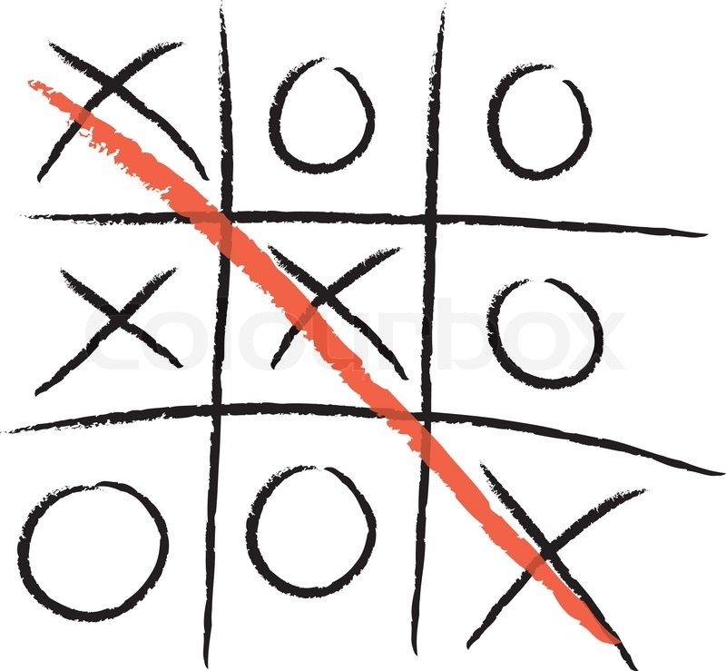

Lab 2: Tic-Tac-Toe
This week, you'll be creating a Tic-Tac-Toe referee program. Given a tic-tac-toe board, your program will figure out if X wins, O wins, or noone is the winner (yet).
Starter code
Save this as a file called TicTacToeRef.java.
import java.util.Scanner;
// Scroll to the bottom to see the part you need to change.
public class TicTacToeRef {
private static final Scanner reader =
new Scanner(System.in).useDelimiter("\n");
/**
* Reads in a character from the user. Aborts the program if the input is
* longer than a single character. If the input is empty, returns a space.
*/
public static String getSingleCharOrSpace() {
String s = reader.next();
if (s.length() > 1) {
System.out.println("Error: Expected a single character");
System.exit(0);
}
if (s.isEmpty()) {
return " ";
}
return s.toUpperCase();
}
public static void main(String[] args) {
// Read in the board
// (don't change this part)
System.out.print("top row, left: ");
String topRowLeft = getSingleCharOrSpace();
System.out.print("top row, middle: ");
String topRowMiddle = getSingleCharOrSpace();
System.out.print("top row, right: ");
String topRowRight = getSingleCharOrSpace();
System.out.print("middle row, left: ");
String middleRowLeft = getSingleCharOrSpace();
System.out.print("middle row, middle: ");
String middleRowMiddle = getSingleCharOrSpace();
System.out.print("middle row, right: ");
String middleRowRight = getSingleCharOrSpace();
System.out.print("bottom row, left: ");
String bottomRowLeft = getSingleCharOrSpace();
System.out.print("bottom row, bottom: ");
String bottomRowMiddle = getSingleCharOrSpace();
System.out.print("bottom row, right: ");
String bottomRowRight = getSingleCharOrSpace();
// Print the board
// (don't change this part)
System.out.println("\nThe board:");
System.out.println(topRowLeft + " | " + topRowMiddle + " | " + topRowRight);
System.out.println("---------");
System.out.println(middleRowLeft + " | " + middleRowMiddle + " | " + middleRowRight);
System.out.println("---------");
System.out.println(bottomRowLeft + " | " + bottomRowMiddle + " | " + bottomRowRight);
System.out.println("\nThe winner:");
// TODO: write code to print the winner if there is one,
// or print "there is no winner"
//
// hint: use the variables topRowLeft, etc with if statements
}
}
Examples

Here, you'd print "The winner is: X"

Here, you'd print "The winner is: O"

Here, you'd print "There is no winner"

Here, you'd also print "There is no winner"
It might help to draw out all possibilities of X or O winning, then afterward translate it to code.